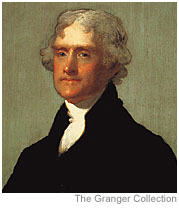

|
When is revolution justified?
This question is perhaps best answered by the great American revolutionary
Thomas Jefferson, who said in his country's Declaration of Independence
that all men were created equal, and endowed by their Creator with certain
inalienable rights, among them life, liberty, and the pursuit of happiness.
Whenever any government becomes destructive of these ends, Jefferson continues,
it is the right of the people to alter or abolish it.
|
Thomas Jefferson
 |
|
|
What are the aims of the Brothers of Liberty?
We model our aims on the Declaration of the Rights of Man and of the
Citizen, as proclaimed by the
National Assembly of France just four years ago, in August of 1789. As was
stated there, we believe that:
- Men are born and remain free and equal in rights.
- These rights are liberty, property, security, and resistance to oppression.
- Liberty consists in the ability to do whatever does not harm another.
- Law is the expression of the general will. All citizens have the right
to take part equally in the formation of the law.
- No person shall be punished except as prescribed by the law, and every
man shall be presumed innocent until judged guilty.
- Every citizen may speak, write, and print freely.
- Property being an inviolable and sacred right, no person shall be
deprived of property except for public necessity...and then on condition
of a just compensation from the government.
How is a revolution best won?
If we can achieve our aims by peaceful means, then so be it. But if
peace will not prevail, then in the words of the deeply mourned
Marat (lately so savagely murdered), when public safety is in peril,
the people must take power out of the hands of those to whom it is entrusted.
We will not flinch from bloodshed.
|